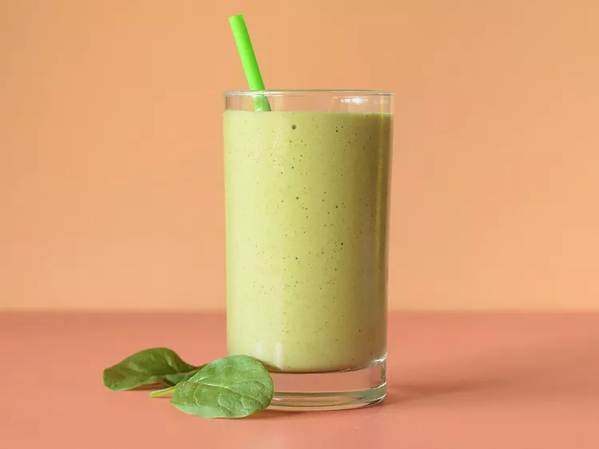

This healthy breakfast smoothie recipe is packed with protein, fiber, unsaturated fats and essential vitamins and minerals. Follow our simple formula, memorize the ingredient amounts, then customize to your liking. Even better, our supercharged breakfast smoothie tastes great and keeps you full until lunchtime. We keep a running stock of frozen bananas to give our smoothies a thicker consistency, but a handful of ice achieves a similar effect.

Whisk whole milk, evaporated milk, 3 tablespoons condensed milk, chia seeds, vanilla and salt together in a medium bowl until fully combined. Fold in oats.
Spoon 3/4 cup of the oat mixture into each of 4 (8-oz.) jars. Cover and refrigerate for at least 8 hours and up to 4 days.
Just before serving, drizzle each jar of oats with 1/2 teaspoon condensed milk. Sprinkle with cinnamon; top each jar with 2 tablespoons strawberries. Serve chilled.
Refrigerate oat mixture (Steps 1 & 2) for up to 4 days. When ready to serve, proceed with Step 3.
4 (8-oz.) jars with lids